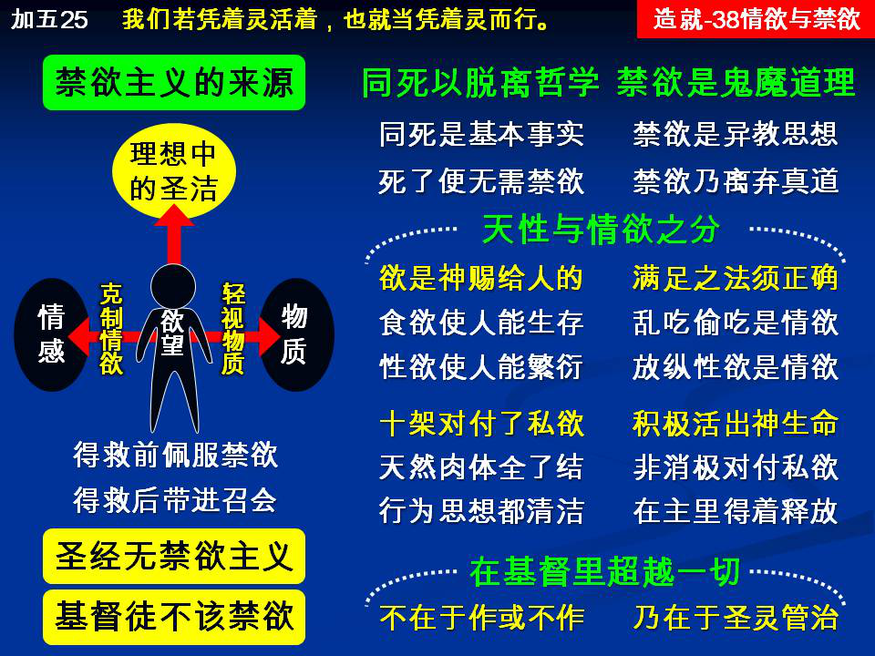

诗歌：535首、436首
重要经文：
歌罗西书二章二十三节：这些事在私意敬拜，自表卑微和苦待己身上，确有智慧之名，但在克制肉体的放纵上，却是毫无价值。
加拉太书五章二十五节：我们若凭着灵活着，也就当凭着灵而行。
腓立比书四章十二至十三节：我知道怎样处卑贱，也知道怎样处富余；或饱足、或飢饿、或富余、或缺乏，在各事上，并在一切事上，我都学得秘诀。我在那加我能力者的里面，凡事都能作。
纲目要点：
壹 禁欲主义的来源。
贰 禁欲主义的意思：
一 禁欲是轻视物质，克制情欲。
二 圣经里没有禁欲主义。
参 同死的人是脱离了世上的哲学。
肆 禁欲是鬼魔的道理。
伍 天性与情欲的分别：
一 情欲是什么。
二 十字架对付了邪情私欲。
三 神的生命是完全积极的。
陆 在基督里超越过了一切：
一 不是不吃不喝，也不是也吃也喝。
二 是圣灵的管治。
信息选读：
禁欲主义的来源
请你们记得，有许多人虽然作了基督徒，但是他的标准，许多时候还是外邦人的标准；他生活的理想，还是外邦人的理想。这就叫基督徒遇见相当困难。好像人把哲学带到召会里来。当人还活在世界里受罪捆绑的时候，他是充满了各种的情欲和各种的贪婪。虽然人自己是无能的，但人总是羡慕能够超越过自己的情欲。所以虽然自己是喜爱物质的东西，也就自然的羡慕能够超越过物质的东西。人的理想，都是凭着他自己所不能的。自己越是受什么东西的辖制，越喜欢那一个与它相反的。人的情欲越重，他的理想就越要脱离情欲。人物质的贪婪越重，他的理想就越想脱离物质。因此，全世界的人自然而然都有一种禁欲的思想。请你们记得，禁欲主义在这一个世界里，不是给世人遵行的，而是给世人一个理想，因为有了这一个理想，人就能够安慰自己。有了这一个理想，自己就有一个目标。有了这一个理想，自己就忘记了自己的程度。把程度摆在那里，把目标摆在那里，自己给自己看见说，我如果能够达到这一个地步，就是最高的。这就是禁欲主义的来源。
禁欲主义的意思
到底禁欲主义的意思是什么呢？禁欲主义，在许多人身上，就是禁止自己使用外面物质的东西，总是越少使用外面物质的东西越好，因为怕外面物质的东西满足了他里面的情欲。所以禁欲主义的人承认说，情欲是在人的里面，各种各样的情欲都在里面。从饮食之欲起，一直到性欲为止，各种的情欲都在里面，这些情欲乃是世人所共同实行的。但是，我如果要作一个圣洁的人，我就得胜过这些；所以，禁欲主义在外面是轻视物质，在里面是学习克制自己的情欲。盼望说，我如果能够不把机会给情欲，我就可以作一个圣洁的人。
同死是基本的事实
保罗告诉歌罗西的信徒说，『你们若是与基督同死。』保罗在这里是把这一个当作基督徒的基本事实。我们基督徒乃是与基督同死的人。全部新约给我们看见，每一个基督徒都是与基督同死的人。罗马六章也告诉我们，我们的旧人已经与祂同钉十字架。 （6。）加拉太二章也说，我已经与基督同钉十字架。 （20。）加拉太五章也给我们看见，我们的肉体和属乎肉体的，都已经与祂同钉十字架。 （24。）圣经里都是说，我们基督徒已经与基督同钉在十字架上了。换一句话说，各各他的十字架，就是基督徒的十字架。基督徒的起点，都是从十字架起的。不只是从基督的十字架起点，也是从自己的十字架起点。当我们接受基督的十字架的时候，基督的十字架已经成功作我们自己的十字架。人没有接受十字架的事实，那一个人就不是基督徒。人如果是基督徒，就已经接受基督十字架的事实变作自己的事实。换一句话说，我在祂里面已经死了。
脱离了世上的哲学
没有一个人能在坟墓里作哲学家。要讲哲学，都是活的时候讲。我们必须看见哲学是死的，是在十字架上的，是不该活的，是完全解决了的。一切讲到情欲和物质的，都是在哲学范围里的东西。人在那里注意情欲如何，物质如何。我要如何把物质脱掉才能圣洁；我要如何把里面的性欲克制，才能圣洁；这完全是世上的哲学。保罗在这里说，你们如果与基督同死，就脱离了世上的哲学。保罗在下面说， 『你们若是与基督同死，脱离了世上的哲学，为什么仍像在世俗中活着？』 你如果死了，死如果是一个事实，你就不能像世界里的人一样。基督徒那一个基本的地位就是死。保罗告诉我们说，那一种实行禁欲主义的人，乃是仍然在世俗里活着的人。所以他就在这里说， 『为什么仍像在世俗中活着，服从那不可拿，不可尝，不可摸，等类的规条呢？』 请记得，这就是禁欲主义的人的主义。许多东西不能尝，不能吃。许多东西连拿都不能拿。许多东西连摸都不可以摸。许多人因为怕他们自己里面的情欲的缘故，所以有许多东西不敢拿，有许多东西不敢摸，不敢尝。
正用的时候就都败坏了
『说到这一切，正用的时候就都败坏了。』禁欲主义听起来是很好听，讲起来是一个很好的哲学。但是，你试试用看。这就像一辆汽车，在家里不抛锚，一到马路上就抛锚。也像一件衣服，挂在橱里很好看，穿在身上这里也破一个洞，那里也破一个洞。你试试看，没有一个人能够借着禁欲主义把情欲除去。你越要禁，越证明你里面的东西多。人越逃避，越证明他怕自己的心是多大。所以他连说都不敢说，连谈都不敢谈。今天所谓清高的人，我也遇见过几个。但是我能够作见证说，他可以口里不说话，但是他的谈话证明他离不了这些欲念，所以他一直在那里逃，在那里躲。他越逃得厉害，越证明他的感觉深。
神的生命是完全积极的
神的生命是完全积极的，不是消极的。不是去对付情欲，是因为看见那积极的，是因为新的生命显出神的生命来。有新的灵在我们里面，能摸着神的灵。有这些积极的叫我们满足，所以基督徒就不在这里注意不可吃，不可摸，不可尝这一类的规条。因为有积极的，就不去注意这些消极的东西。我们要多摸着积极的东西、荣耀的东西，一直摸着荣耀的灵、荣耀的生命。这些积极的一摸着，那些不可吃，不可摸，不可拿，是极小的事情。每一个在主里面的人，对于这些事，都能够完全得着释放。请你们记得，圣经里的受苦不是这一个。如果这一个是受苦的话，所有拉车的人都要进国度了，因他们比我们受苦得多。千万不要把这些东西拖进来。异教的思想不能进来。我告诉你们，当神使这些积极的在我们身上显得够大的时候，这些事都过去，都看不见。因为在我们里面的，根本是太大，太荣耀了。（摘自初信造就第三十八篇）
课程复习：
一 禁欲主义的来源是什么？
二 到底禁欲主义的意思是什么呢？
三 『没有一个人能在坟墓里作哲学家』这句话是什么意思?
四 为什么说禁欲主义正用的时候就都败坏了？
五 请说明神的生命是完全积极的。
辅助图表：
